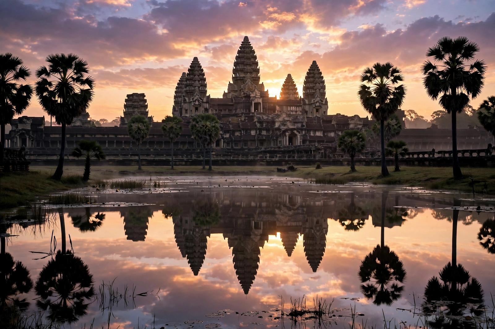

| Angkor Archaeological Park | |
|---|---|
| Location | Siem Reap Province, Cambodia |
| Area | 401 km² (protected zones) |
| Period | 9th – 15th centuries AD |
| Civilisation | Khmer Empire |
| Designation | UNESCO World Heritage Site (1992) |
| Management | APSARA National Authority |

Angkor Archaeological Park is a major archaeological site in northern Cambodia, near the city of Siem Reap, containing the monumental remains of the successive capitals of the Khmer Empire from the 9th to the 15th century. Inscribed on the UNESCO World Heritage List in 1992, the park covers some 400 square kilometres of monuments, reservoirs, causeways and ancient urban fabric, and is one of the most important archaeological sites in Southeast Asia and among the world's most visited heritage destinations.
The park's best-known monument is Angkor Wat, the vast temple-mausoleum of Suryavarman II (early 12th century) and the largest religious monument in the world. To its north lies the walled city of Angkor Thom, founded by Jayavarman VII, centred on the Bayon temple with its serene giant face-towers, and containing the Terrace of the Elephants, the Baphuon and the royal palace enclosure with Phimeanakas. Earlier and later monuments spread across the park — Preah Khan, Ta Prohm (famous for silk-cotton trees growing through its ruins), Ta Som, Neak Pean, the great reservoirs of the East and West Baray, and the pink sandstone temple of Banteay Srei some 25 km to the north-east, in the wider protected area.
Angkor's monumental core was the centre of one of the largest pre-industrial cities on Earth, a sprawling low-density urban complex fed by an elaborate hydraulic network of canals and reservoirs (barays). The first capital here was Yasodharapura, founded by Yasovarman I around the hill temple of Phnom Bakheng. Recent lidar surveys by the Greater Angkor Project and partners have mapped grid-like suburbs, roads and waterworks extending far beyond the temple walls.
Systematic clearing and restoration began under the French École française d'Extrême-Orient's Conservation d'Angkor in 1907. After the civil-war decades, international conservation resumed in the 1990s under the Cambodian APSARA Authority, with teams from many countries working on individual temples. Visitor numbers grew from a few thousand a year to over two million before the COVID-19 pandemic, making the management of tourism pressure, water-table change and sandstone decay continuing challenges.